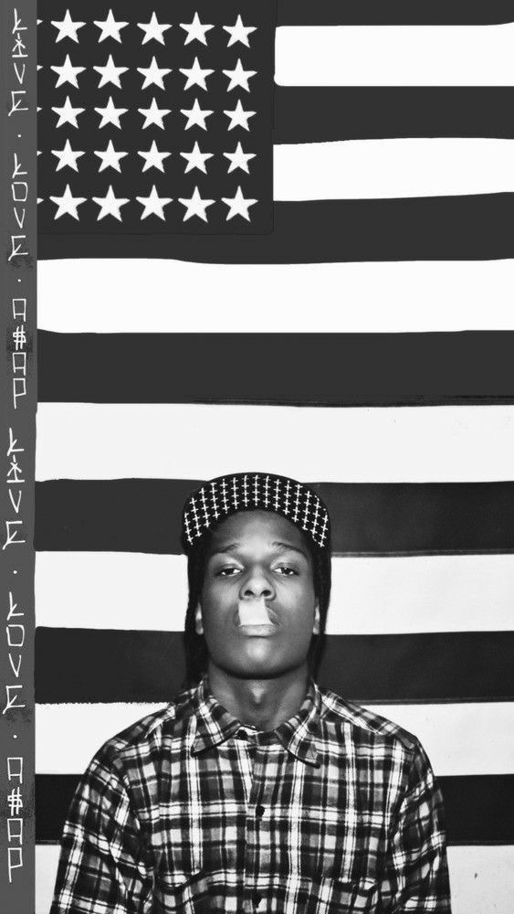

My favorite music genre
My favorite movie
My favorite TV show
Another favorite show

My favorite artist
Another favorite artist
My favorite travel destination
Another favorite travel destination
Favorite city